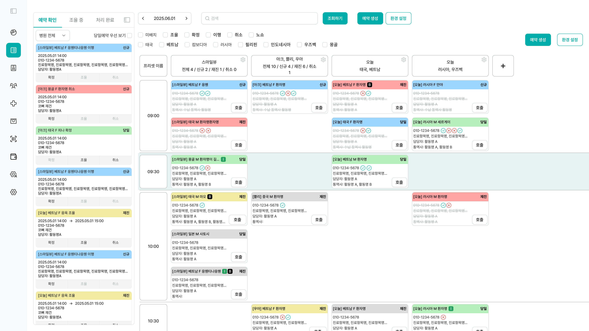
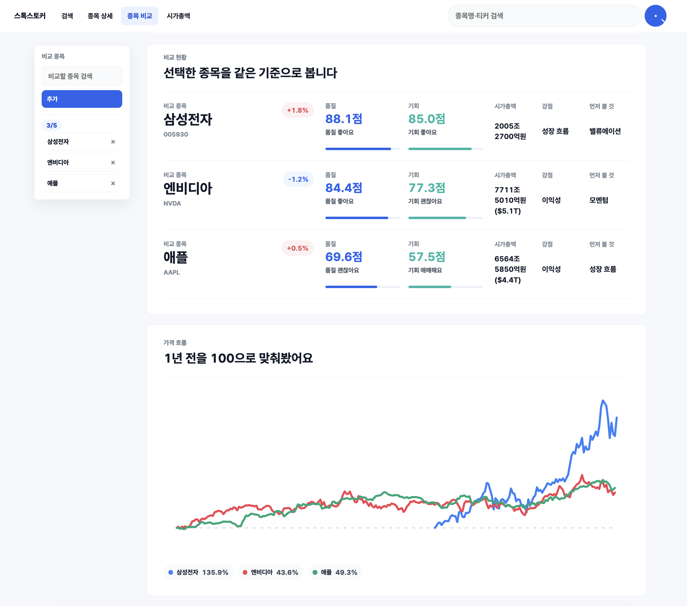
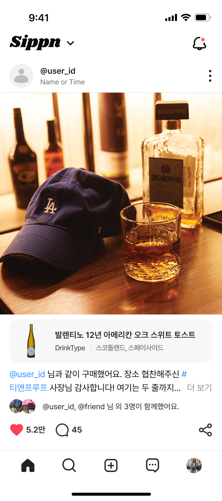
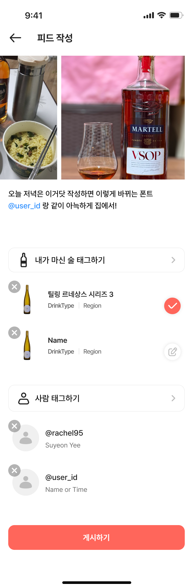
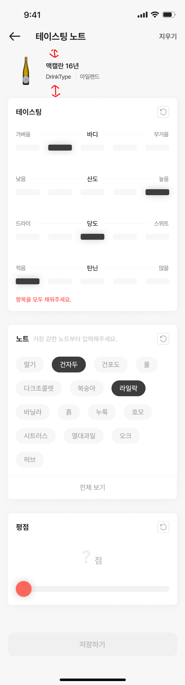

기획서를 바로 시켜봅니다


AI Native PO / PM
말로만 AI를 활용한다고 하지 않습니다. 매일 새로운 레포를 분석하고, 에이전트를 구축하며, Openweight 모델 양자화까지 시도하는 Self-Improving PO입니다.
포트폴리오 보기 →WHAT I PROVE
AI에게 맡긴 일도 검증 가능한 결과로 남겨야 한다고 생각합니다.
러프한 요구를 팀이 움직일 수 있는 기준으로 바꿔왔습니다.
흩어진 데이터를 사용자가 판단하는 화면으로 연결했습니다.
외국인 의료관광, 주식 데이터, 3D CAD, 주류 큐레이션처럼 서로 다른 문제를 다뤘습니다. 집요함과 실행력이 무기이며, 몰입만이 문제를 해결합니다.
HOW I WORK WITH AI
LLM은 비결정적입니다. 명확한 요구사항과 실행 환경, 검증 루프를 설계해 이를 통제해야 합니다. 그리고 이로 인해 더더욱, "기획"이 중요합니다.


INTERX PRODUCT MAP × MY PROOF
Dimetric
ireh link
StockStalker
Codex, Claude Code, ChatGPT를 활용해 요구사항 분해, 구현, 오류 분석, 테스트, 문서화를 반복했습니다.
ireh link에서 엑셀·칠판·수기 업무를 예약, 매출, 정산, QA가 연결된 운영 시스템으로 설계했습니다.
StockStalker에서 API 제한, 캐시, 점수화, 비교 UX를 엮어 사용자가 상태를 이해하는 구조를 만들었습니다.
PROOF BY NUMBERS
방문, 조회, 매출, PoC, 구매 의향처럼 실제 사용자와 운영자가 남긴 숫자를 기준으로 경험을 정리했습니다.
스톡스토커 (StockStalker)
12,000 1주 종목 조회스톡스토커 (StockStalker)
1,000 1주 방문자자투리 (Jaturi)
10,570,000테이스팃 (Taste-it)
82% 구매 의향디메트릭 (Dimetric)
<5% 운용률 문제문제를 책상에서 가정하지 않고 현장에서 먼저 확인했습니다.
초기 아이디어를 실제 운영 조건 안에서 검증했습니다.
실험 전후를 비교해 실제 거래 행동의 변화를 확인했습니다.
청년창업사관학교 포함, 창업 프로젝트로 외부 자원을 확보했습니다.
취향 기반 큐레이션 아이디어를 사용자 테스트로 검증했습니다.
설문과 MVP 반응을 바탕으로 서비스 가능성을 판단했습니다.
퇴사 후 단독 제작한 서비스에서 유료 결제 흐름까지 확인했습니다.
클라이언트 미팅, 솔루션 기획, QA, 배포까지 전 과정을 함께했습니다.
DELIVERABLE ATLAS
기획은 말보다 PRD, IA, 화면설계, QA, 배포 결과로 남아야 한다고 생각합니다.
ireh link의 예약, 매출, 상품, 정산, 웹빌더 흐름을 화면과 정책 단위로 정리했습니다.
sippn, ireh link에서 일부 화면 디자인과 사용자군별 진입 플로우를 직접 잡았습니다.
외주와 내부 개발 사이에서 구현 범위, 일정, 우선순위, 클라이언트 요청을 조율했습니다.
QA 시트로 기능을 검증하고, 데이터 마이그레이션 중 매출 데이터 오류를 발견했습니다.
Dimetric에서는 AI 응답을 Graph Patch와 CAD Compile 검증 뒤 반영하도록 설계했습니다.
StockStalker에서 API 제한과 캐시를 고려해 종목 상세, 비교, 공시 요약 UX를 만들었습니다.
CAREER TIMELINE
메인 기획자 겸 PM으로 업체 방문 설문, Android MVP, PoC, 매출, 정부지원 사업을 경험했습니다.
팀 대표로 설문, 인터뷰, MVP 테스트, 제휴 검증, 대학창업대전 대표팀 경험을 쌓았습니다.
서비스 기획자/PM으로 ireh link와 sippn을 맡아 기획, 디자인 일부, QA, 개발 매니징을 수행했습니다.
Dimetric, StockStalker, 사주중독 (SajuHook)을 혼자 기획, 개발, 배포하며 AI Native 실행력을 만들었습니다.
자연어 요청을 바로 적용하지 않고 Graph Patch, CAD Compile, Snapshot을 거쳐 모델을 갱신했습니다. AI 응답이 실패해도 원본 프로젝트가 망가지지 않도록 검증 흐름을 먼저 설계했습니다.

클라이언트가 러프한 요구사항만 전달한 상태에서 레퍼런스를 수집하고 PRD, IA, 화면설계서, Figma 일부 디자인, QA 시트, Jira/WBS 기반 개발 매니징을 담당했습니다.

국내/미국 주식 데이터를 수집, 캐싱, 스코어링해 종목 상세와 비교 화면으로 구성했습니다. 배포 후 사용자 피드백을 받아 SEC, DART 공시 데이터와 룰베이스 요약을 추가했습니다.
회사 안에서는 프로젝트를 제안했고, 회사 밖에서는 직접 제품을 만들었습니다.



INTERNAL PROPOSAL · 2026.01 - 2026.04
테이스팃에서 검증한 취향·리뷰 기반 큐레이션 아이디어를 회사 내부 신규 프로젝트로 제안했습니다. 유저 시나리오, 일부 디자인, 개발 매니징, GA4 이벤트 흐름까지 맡았습니다.
MOBILE UX
술 취향 기록, 피드 작성, 사람·술 태그 구조를 나누어 매니아층과 라이트 유저의 진입 맥락을 분리했습니다.
STARTUP ROOTS
81개 업체 방문 설문, Android MVP 배포, 80여 개 업체 PoC, 4분기 매출 1,057만 원, 청창사 6,000만 원.
MARKET VALIDATION
팀 대표로 600명 MVP 테스트, 구매 의향 82%, 대학창업대전 대표팀 참가 경험을 만들었습니다.
HOW I WOULD WORK AT INTERX
제조 경험은 새로 쌓아야 합니다. 대신 저는 모르는 도메인을 익힐 때마다 요구사항, 데이터 흐름, 사용자 판단 기준, QA 기준을 문서와 화면으로 남기는 방식으로 일해왔습니다.
작업자, 관리자, 경영자가 쓰는 말을 분리해 챗봇/Agent의 질문 단위와 응답 책임을 정의하겠습니다.
데이터를 많이 보여주기보다 사용자가 오늘 무엇을 조정해야 하는지 먼저 보이게 만들겠습니다.
잘못된 추천, 누락 데이터, 권한 문제를 QA와 상태 표시로 드러내 운영 리스크를 줄이겠습니다.
INTERX FIT
AI를 활용해 더 빠르게 만들고, 검증 가능한 문서와 흐름으로 팀이 안심하고 실행할 수 있게 하겠습니다. 모르는 도메인을 빠르게 익히되, 배운 것을 제품 기준과 운영 기준으로 남기는 PO가 되겠습니다.